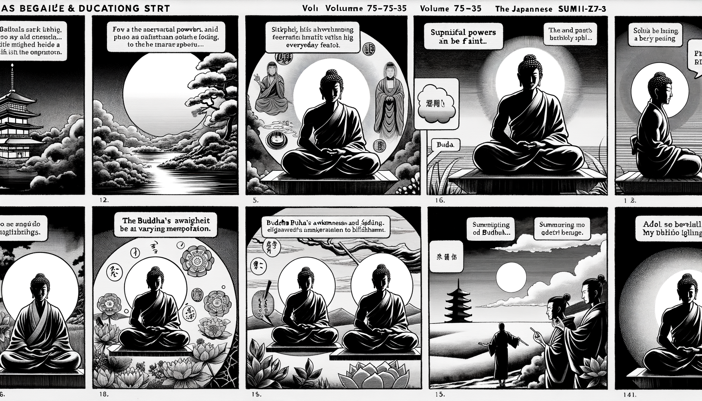

七十五巻 巻一覧
正法眼藏第35 神通
本ページは tools/gen_web_volumes.py が doc/正法眼蔵.txt から冒頭を抜粋して生成しています。図・詳細解説は今後の手編集で拡張できます。
出典（原文）: https://shomonji.or.jp/zazen/doc/genzou.html
（ローカル生成の全文: 全文ページ）
この巻の位置づけ（学習メモ）
道元『正法眼蔵』七十五巻の第35篇「神通」です。禅籍・経典への引用や語の行間が重なりやすいので、一度ですべてを要約に還元しない読み方を推奨します。問答 Bot では巻スコープにこの題名を含めると応答が安定しやすいことがあります。
語彙の足場
- 題名語：巻題「神通」は、道元が本章で特に扱う論点の看板です。辞書義だけに固定せず、本文中の用例で意味を確かめます。
- 引用と典故：公案・経文の引用は、一字一句の照応（何に答えているか）を押さえると全体が見えやすくなります。
- 学び方：冒頭だけでも音読し、分からない箇所は印を付けて後から問うとよいです。
本文（冒頭・自動抜粋）
出典はリポジトリ内 doc/正法眼蔵.txt です。原文の参照元: https://shomonji.or.jp/zazen/doc/genzou.html
かくのごとくなる神通は、佛家の茶飯なり、諸佛いまに懈倦せざるなり。これに六神通あり、一神通あり。無神通あり、最上通あり。朝打三千なり、暮打八百なるを爲體とせり。與佛同生せりといへども佛にしられず、與佛同滅すといへども佛をやぶらず。上天に同條なり、下天にも同條なり、修行取證、みな同條なり。同雪山なり、如木石なり。過去の諸佛は釋迦牟尼佛の弟子なり、袈裟をささげてきたり、塔をささげきたる。このとき釋迦牟尼佛いはく、諸佛神通不可思議なり。しかあればしりぬ、現在未來も亦復如是なり。
大潙禪師は、釋迦如來より直下三十七世の祖なり、百丈大智の嗣法なり。いまの佛祖、おほく十方に出興せる、大潙の遠孫にあらざるなし、すなはち大潙の遠孫なり。
大潙あるとき臥せるに、仰山來參す。大潙すなはち轉面向壁臥す。
仰山いはく、慧寂これ和尚の弟子なり、形迹もちゐざれ。
大潙おくるいきほひをなす。仰山すなはちいづるに、大潙召して寂子とめす。
仰山かへる。
大潙いはく、老僧ゆめをとかん、きくべし。
仰山かうべをたれて聽勢をなす。
大潙いはく、わがために原夢せよ、みん。
仰山一盆の水、一條の手巾をとりてきたる。
大潙つひに洗面す。洗面しをはりてわづかに坐するに、香嚴きたる。
大潙いはく、われ適來寂子と一上の神通をなす。不同小小なり。
香嚴いはく、智閑下面にありて、了了に得知す。
大潙いはく、子、こころみに道取すべし。
香嚴すなはち一椀の茶を點來す。
大潙ほめていはく、二子の神通智慧、はるかに鶖子目連よりもすぐれたり。
佛家の神通をしらんとおもはば、大潙の道取を參學すべし。
不同小小のゆゑに、作是學者、名爲佛學、不是學者、不名佛學（是の學を作す者を名づけて佛學と爲し、是の學にあらざれば佛學と名づけず）なるべし。嫡嫡相傳せる神通智慧なり。さらに西天竺國の外道二乘の神通、および論師等の所學を學することなかれ。
いま大潙の神通を學するに、無上なりといへども、一上の見聞あり。いはゆる臥次よりこのかた、轉面向壁臥あり、起勢あり、召寂子あり、説箇夢あり、洗面了纔坐あり、仰山又低頭聽あり、盆水來、手巾來あり。
しかあるを、大潙いはく、われ適來寂子と一上の神通をなすと。
この神通を學すべし。佛法正傳の祖師、かくのごとくいふ。説夢洗面といはざることなかれ、一上の神通なりと決定すべし。すでに不同小小といふ、小乘小量小見におなじかるべからず、十聖三賢等に同ずべきにあらず。かれらみな小神通をならひ、小身量のみをえたり。佛祖の大神通におよばず。これ佛神通なり、佛向上神通なり。この神通をならはん人は、魔外にうごかざるべからざるなり。經師論師いまだきかざるところ、きくとも信受しがたきなり。二乘外道經師論師等は小神通をならふ、大神通をならはず。諸佛は大神通を住持す、大神通を相傳す。これ佛神通なり。佛神通にあらざれば、盆水來、手巾來せず。轉面向壁臥なし、洗面了纔坐なし。
この大神通のちからにおほはれて、小神通等もあるなり。大神通は小神通を接す、小神通は大神通をしらず。小神通といふは、いはゆる毛呑巨海、芥納須彌なり。また身上出水、身下出火等なり。又五通六通、みな小神通なり。これらのやから、佛神通は夢也未見聞在なり。五通六通を小神通といふことは、五通六通は修證に染汚せられ、際斷を時處にうるなり。在生にありて身後に現ぜず、自己にありて他人にあらず。此土に現ずといへども他土に現ぜず。不現に現ずといへども、現時に現ずることをえず。
この大神通はしかあらず。諸佛の教行證、おなじく神通に現成せしむるなり。ただ諸佛の邊に現成するのみにあらず、佛向上にも現成するなり。神通佛の化儀、まことに不可思議なるなり。有身よりさきに現ず、現の三際にかかはれぬあり。佛神通にあらざれば、諸佛の發心修行菩提涅槃いまだあらざるなり。いまの無盡法界海の常不變なる、みなこれ佛神通なり。毛呑巨海のみにあらず、毛保任巨海なり、毛現巨海なり、毛吐巨海なり、毛使巨海なり。一毛に盡法界を呑却し吐却するとき、ただし一盡法界かくのごとくなれば、さらに盡法界あるべからずと學することなかれ。芥納須彌等もまたかくのごとし。芥吐須彌および芥現法界、無盡藏海にてもあるなり。毛吐巨海、芥吐巨海するに、一念にも吐却す、萬劫にも吐却するなり。萬劫一念、おなじく毛芥より吐却せるがゆゑに。毛芥はさらになによりか得せる。すなはちこれ神通より得せるなり。この得、すなはち神通なるがゆゑに、ただまさに神通の神通を出生するのみなり。さらに三世の存沒あらずと學すべきなり。諸佛はこの神通のみに遊戲するなり。
龐居士蘊公は、祖席の偉人なり。江西石頭の兩席に參學せるのみにあらず、有道の宗師おほく相見し、相逢しきたる。あるときいはく、神通竝妙用、運水及搬柴。
この道理、よくよく參究すべし。いはゆる運水とは、水を運載しきたるなり。自作自爲あり、他作教他ありて、水を運載せしむ。これすなはち神通佛なり。しることは有時なりといへども、神通はこれ神通なり。人のしらざるには、その法の癈するにあらず、その法の滅するにあらず。人はしらざれども、法は法爾なり。運水の神通なりとしらざれども、神通の運水なるは不退なり。
搬柴とは、たきぎをはこぶなり。たとへば六祖のむかしのごとし。朝打三千にも神通としらず、暮打八百にも神通とおぼへざれども、神通の現成なり。
まことに諸佛如來の神通妙用を見聞するは、かならず得道すべし。このゆゑに一切諸佛の得道、かならずこの神通力に成就せるなり。しかあれば、いま小乘の出水、たとひ小神通なりといふとも、運水の大神通なることを學すべし。運水搬柴はいまだすたれざるところ、人さしおかず。ゆゑにむかしよりいまにおよぶ、これよりかれにつたはれり。須臾も退轉せざるは神通妙用なり。これは大神通なり、小小とおなじかるべきにあらず。
洞山悟本大師、そのかみ雲巖に侍せりしとき、雲巖とふ、いかなるかこれ价子神通妙用。
ときに洞山叉手近前而立。
又雲巖とふ、いかならんか神通妙用。
洞山ときに珍重而出。
この因緣、まことに神通の承言會宗なるあり。神通の事存凾蓋合なるあり。まさにしるべし、神通妙用は、まさに兒孫あるべし、不退なるものあり。まさに高祖あるべし、不進なるものなり。いたづらに外道二乘にひとしかるべきとおもはざれ。
佛道に身上身下の神變神通あり。いま盡十方界は、沙門一隻の眞實體なり。九山八海、乃至性海、薩婆若海水、しかしながら身上身下身中の出水なり。又非身上非身下非身中の出水なり。乃至出火もまたかくのごとし。ただ水火風等のみにあらず、身上出佛なり、身下出佛なり。身上出祖なり、身下出祖なり。身上出無量阿僧祇劫なり、身下出無量阿僧祇劫なり。身上出法界海なり、身上入法界海なるのみにあらず、さらに世界國土を吐却七八箇し、呑却兩三箇せんことも、またかくのごとし。いま四大五大六大諸大無量大、おなじく出なり沒なる神通なり。呑なり吐なる神通なり。いまの大地虛空の面面なる、呑却なり、吐却なり。芥に轉ぜらるるを力量とせり、毛にかかれるを力量とせり。識知のおよばざるより同生して、識知のおよばざるを住持し、識知のおよばざるに實歸す。まことに短長にかかはれざる佛神通の變相、ひとへに測量を擧して擬するのみならんや。
むかし五通仙人、ほとけに事奉せしとき、仙人とふ、佛有六通、我有五通、如何是那一通（佛に六通あり、我れに五通あり、如何ならんか是れ那一通）。
ほとけ、ときに仙人を召していふ、五通仙人。
仙人應諾す。
佛言、那一通、爾問我。
この因緣、よくよく參究すべし。仙人いかでか佛に有六通としる。佛有無量神通智慧なり、ただ六通のみにあらず。たとひ六通のみをみるといふとも、六通もきはむべきにあらず、いはんやその餘の神通におきて、いかでかゆめにもみん。
しばらくとふ、仙人たとひ釋迦老子をみるといふとも、見佛すやいまだしや、といふべし。たとひ見佛すといふとも、釋迦老子をみるやいまだしや。たとひ釋迦老子をみることをえ、たとひ見佛すといふとも、五通仙人をみるやいまだしや、と問著すべきなり。この問處に用葛藤を學すべし、葛藤斷を學すべし。いはんや佛有六通、しばらく隣珍を算數するにおよばざるか。
いま釋迦老子道の那一通、爾問我のこころ、いかん。仙人に那一通ありといはず、仙人になしといはず。那一通の通塞はたとひとくとも、仙人いかでか那一通を通ぜん。いかんとなれば、仙人に五通あれど、佛有六通のなかの五通にあらず。仙人通はたとひ佛通の所通に通破となるとも、仙通いかでか佛通を通ずることをえん。もし仙人、佛の一通をも通ずることあらば、この通より佛を通ずべきなり。仙人をみるに佛通に相似せるあり、佛儀をみるに仙通に相似せることあるは、佛儀なりといへども、佛神通にあらずとしるべきなり。通ぜざれば、五通みな佛とおなじからざるなり。
たちまちに那一通をとふ、なにの用かある、となり。釋迦老子のこころは、一通をもとふべし、となり。那一通をとひ、那一通をとふべし、一通も仙人はおよぶところなし、となり。しかあれば、佛神通と餘者通とは、神通の名字おなじといへども、神通の名字はるかに殊異なり。ここをもて、
臨濟院慧照大師云、古人云、如來擧身相、爲順世間情。恐人生斷見、權且立虛名。假言三十二、八十也空聲。有身非覺體、無相乃眞形（臨濟院慧照大師云く、古人云く、如來擧身の相は、世間の情に順ぜんが爲なり。人の斷見を生ぜんことを恐りて、權に且く虛名を立つ。假に三十二と言ふ、八十も也た空しき聲なり。有身は覺體にあらず、無相は乃ち眞形なり）。
儞道、佛有六通、是不可思議。一切諸天、神仙、阿修羅、大力鬼、亦有神通、應是佛否。道流莫錯、祗如阿修羅與天帝釋戰、戰敗領八萬四千眷屬、入藕孔中藏。莫是聖否。如山僧所擧、皆是業通依通（儞道ふべし、佛に六通あるは、是れ不可思議なり。一切諸天、神仙、阿修羅、大力鬼も亦た神通あり、應に是れ佛なるべしや否や。道流、錯ること莫れ。ただ阿修羅と天帝釋と戰ふが如き、戰敗れて、八萬四千の眷屬を領じて、藕孔の中に入りて藏る。是れ聖なること莫しや否や。山僧の擧する所の如きは、皆是れ業通なり、依通なり）。
夫如佛六通者不然。入色界不被色惑、入聲界不被聲惑、入香界不被香惑、入味界不被味惑、入觸界不被觸惑、入法界不被法惑。所以達六種色聲香味觸法、皆是空相、不能繋縛。此無依道人、雖是五蘊漏質、便是地行神道（夫れ、佛の六通の如きは然らず。色界に入つて色に惑はされず、聲界に入つて聲に惑はされず、香界に入つて香に惑はされず、味界に入つて味に惑はされず、觸界に入つて觸に惑はされず、法界に入つて法に惑はされず。所以に六種の色聲香味觸法皆是れ空相なるに達すれば、繋縛すること能はず。此れ無依の道人なり。是れ五蘊漏質なりと雖も、便ち是れ地行神道なり）。
道流、眞佛無形、眞法無相。儞祗麼幻化上頭作模作樣、設求得者、皆是野狐精魅、竝不是眞佛、是外道見解（道流、眞佛は無形なり、眞法は無相なり。儞祗麼に幻化上頭に模を作し樣を作す。設ひ求得すとも、皆な是れ野狐精魅なり。竝びに是れ眞佛にあらず、是れ外道の見解なり）。
しかあれば、諸佛の六神通は、一切諸天鬼神および二乘等のおよぶべきにあらず、はかるべきにあらざるなり。佛道の六通は、佛道の佛弟子のみ單傳せり、餘人の相傳せざるところなり。佛六通は佛道に單傳す、單傳せざるは佛六通をしるべからざるなり。佛六通を單傳せざらんは、佛道人なるべからずと參學すべし。
百丈大智禪師云、眼耳鼻舌、各各不貪染一切有無諸法、是名受持四句偈、亦名四果。六入無迹、亦名六神通、祗如今但不被一切有無諸法礙、亦不依住知解、是名神通。不守此神通、是名無神通。如云無神通菩薩、蹤跡不可得尋、是佛向上人、最不可思議人、是自己天（百丈大智禪師云く、眼耳鼻舌、各各一切有無の諸法に貪染せず、是を受持四句偈と名づく、亦た四果と名づく。六入無迹なるを、亦た六神通と名づく。祗今但一切有無の諸法に礙へられず、亦た知解に依住せざるが如き、是を神通と名づく。此の神通を守らざる、是を無神通と名づく。云ふが如き無神通菩薩は、蹤跡尋ぬること得べからず、是れ佛向上人なり、最不可思議人なり、是れ自己天なり）。
いま佛佛祖祖相傳せる神通、かくのごとし。諸佛神通は佛向上人なり、最不可思議人なり、是自己天なり、無神通菩薩なり。知解不依住なり、神通不守此なり、一切諸法不被礙なり。いま佛道に六神通あり、諸佛の傳持しきたれることひさし。一佛も傳持せざるなし、傳持せざれば諸佛にあらず。その六神通は、六入を無迹にあきらむるなり。無迹といふは、古人のいはく、六般神用空不空、一顆圓光非内外。非内外は無迹なるべし。無迹に修行し、參學し、證入するに、六入を動著せざるなり。動著せずといふは、動著するもの三十棒分あるなり。
しかあればすなはち、六神通かくのごとく參究すべきなり。佛家の嫡嗣にあらざらん、たれかこのことわりあるべしともきかん。いたづらに向外の馳走を歸家の行履とあやまれるのみなり。又、四果は、佛道の調度なりといへども、正傳せる三藏なし。算沙のやから、跉跰のたぐひ、いかでかこの果實をうることあらん。得小爲足の類、いまだ參究の達せるにあらず。ただまさに佛佛相承せるのみなり。いはゆる四果は、受持四句偈なり。受持四句偈といふは、一切有無諸法におきて、眼耳鼻舌各各不貪染なるなり。不貪染は不染汚なり。不染汚といふは、平常心なり、吾常於此切なり。
六通四果を佛道に正傳せる、かくのごとし。これと相違あらんは佛法にあらざらんとしるべきなり。しかあれば、佛道はかならず神通より達するなり。その達する、涓滴の巨海を呑吐する、微塵の高嶽を拈放する、たれか疑著することをえん。これすなはち神通なるのみなり。
正法眼藏神通第三十五
爾時仁治二年辛丑十一月十六日在於觀音導利興聖寶林寺示衆
寛元甲辰中春初一日書寫之在於越州吉峰侍者寮 懷弉
図解（4コマ・AI生成）
教義の根拠は本文・出典に従い、漫画は比喩の補助に留めてください。

深掘り（読解のコツ）
- 道元文は定義の羅列に見えても、多くの場合誤解への遮断と正伝の姿勢が背骨になっています。
- 「当体」「現成」「即」などの語が出たら、その巻独自の差別相にどう接続しているかをメモしておくとよいです。